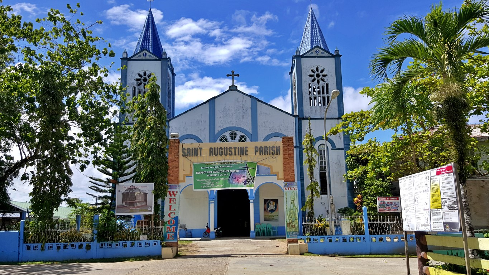
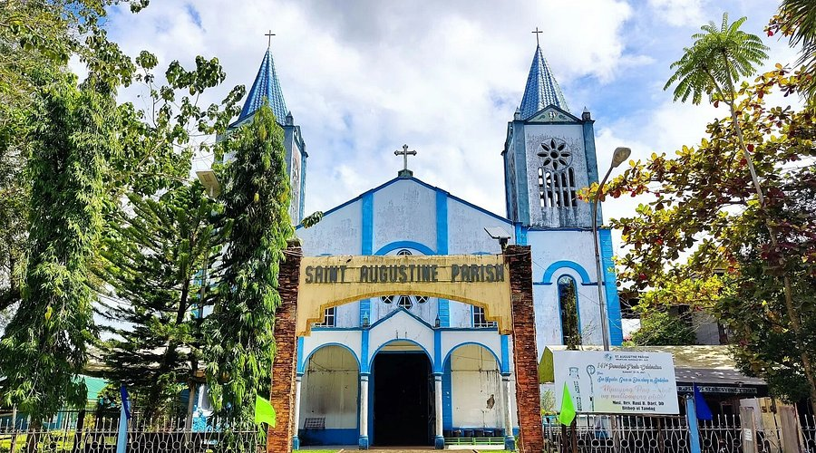
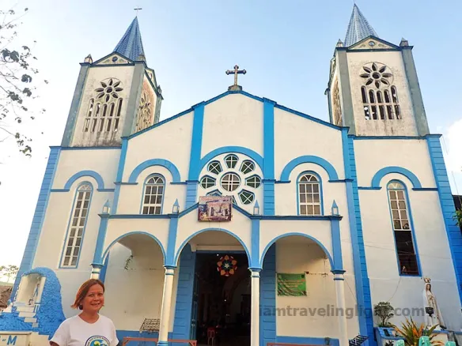
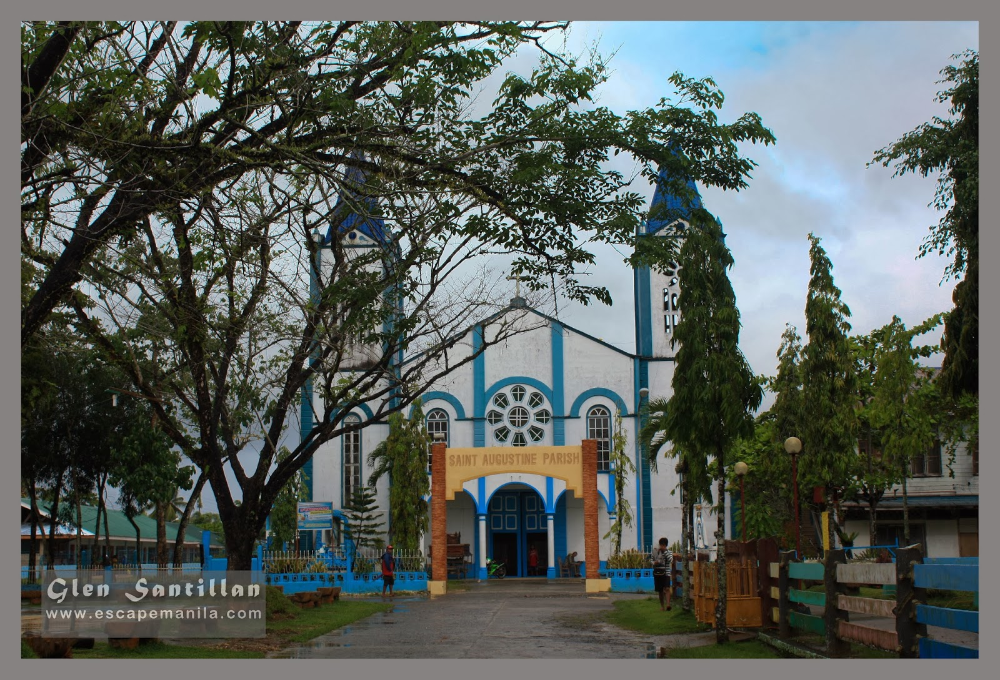

St. Augustine Parish is a well-known church in the municipality of Lianga, recognized for its simple yet meaningful architectural design. The structure reflects traditional Catholic elements, with a modest façade and a spacious interior for worship. The altar is carefully arranged and serves as the focal point of religious ceremonies. The atmosphere inside the church is peaceful and reverent, encouraging devotion among visitors. It stands as an important spiritual center for the community.
The environment surrounding the parish enhances its sense of tranquility and reflection. Its location within the town makes it easily accessible for both locals and tourists. Inside, religious decorations and images contribute to the sacred ambiance. Natural lighting brightens the interior, creating a welcoming space. Overall, the parish provides a calm and meaningful setting for spiritual activities.


St. Augustine Parish has a history rooted in the spread of Catholicism in Lianga. It was established by missionaries who sought to bring Christian teachings to the area. Over time, the church became a central place for worship and community gatherings. It has played a significant role in shaping local traditions and religious practices. The parish reflects the enduring faith of its community.
Throughout the years, the church has undergone improvements to maintain its structure and accommodate more worshippers. These developments ensured that the parish remained functional and welcoming. The church continues to host important religious events and celebrations. Community support has been vital in preserving its condition. Today, it stands as a symbol of faith and cultural heritage in Lianga.
St. Augustine Parish’s church building follows a simple yet enduring architectural style common to provincial parishes in Mindanao—concrete walls, a modest façade, and a bell tower that serves as a local landmark. Its interior houses an image of Saint Augustine, together with icons of the Blessed Virgin Mary and other saints, forming the center of liturgical activity.


Beyond worship, the parish plays a vital role in Lianga’s community life. It hosts catechetical programs, youth ministries, and charitable outreach. The annual feast of Saint Augustine brings residents and returning families together for processions, novenas, and civic festivities that reinforce the town’s shared faith identity.
Today, St. Augustine Parish continues to serve as a focal point of faith and tradition for Lianga’s predominantly Catholic population. It remains under the pastoral care of clergy from the Diocese of Tandag and is a visible testament to the enduring Catholic heritage of the region.